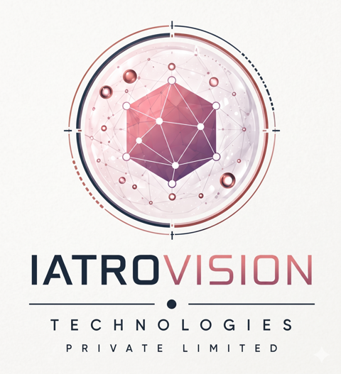

Medical imaging & AI
Image analysis and research into AI-assisted screening.

Physician-founded. Built in India.
Intelligent technology. Human care.
We build healthcare technology that brings artificial intelligence and clinical judgment together.
IatroVision Technologies Private Limited is a physician-founded Indian biomedical and health-technology company based in Surat, Gujarat.
We develop AI for medical imaging and clinical workflows, with doctors kept in the loop. Our starting point is a practical one: useful technology should support the people making clinical decisions.
Image analysis and research into AI-assisted screening.
Anatomy, workflow and safety assessment with surgeon review.
Decision-support tools and connections to medical professionals.
A longer-term focus on imaging across clinical specialties.
Exploring biotechnology, medical devices and genomics.
Working toward connected, responsible digital-health systems.
A first opinion. A doctor within reach.
Our live skin-screening product combines image validation, a two-model AI ensemble and escalation to a doctor. In-app doctor chat connects the AI output to human care.
Informational skin analysis and doctor-assisted consultation. Not a medical device or a replacement for professional medical judgment.
Understanding the surgical field.
A research prototype for laparoscopic cholecystectomy video: anatomy segmentation, surgical phase and instrument recognition, and Critical View of Safety assessment.
Surgeons can review and correct model labels, keeping clinical expertise in the development loop.
Research prototype, not a medical device. Training to date uses public datasets only; clinical validation has not been completed.
Company incorporated in India
Udyam MSME registration
DPIIT startup recognition
DermaLens AI on Google Play, with doctor chat
AI Surgeon research baseline established
Clinical validation and more imaging specialties
We aim to strengthen AI-assisted screening through clinical validation and doctor feedback.
We aim to build an imaging platform that supports more specialties and connects with clinical workflows.
We aim to expand into biomedical R&D, research laboratories and medical-device innovation.
We share the goals of ABDM, IndiaAI and Digital India: accessible care, responsible AI and connected health systems. This describes our aspirations, not a partnership or endorsement.
Co-founder, Director & CEO
MBBS · General Surgery Resident
A surgeon building clinical AI, bringing the realities of medical practice into product development.
For company enquiries, research conversations and collaboration.